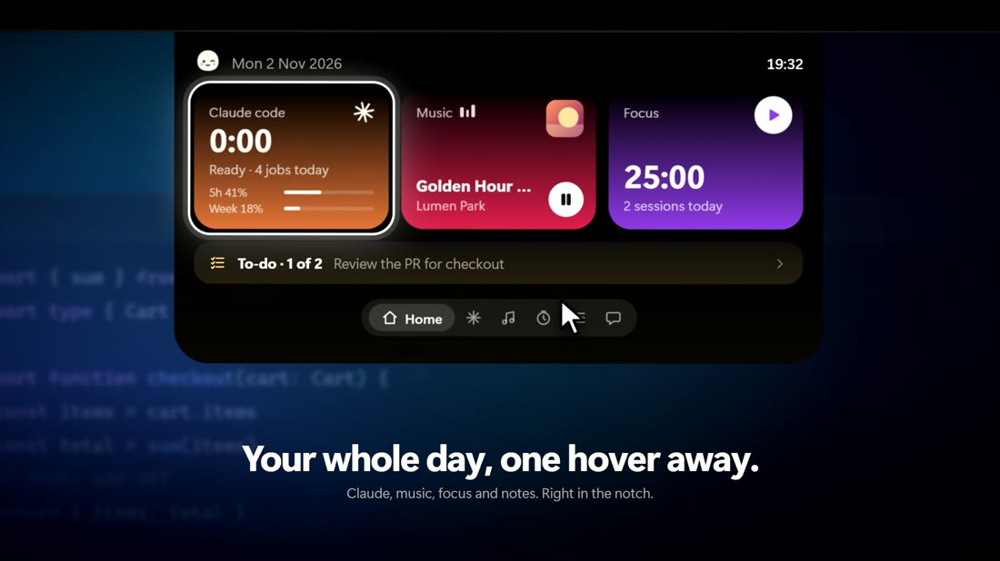

Everything in one small place
Hover over the notch and it opens. Move away and it's gone again.

A home for your day
Date, time, Claude Code, music, focus timer and your next task, all at a glance.

Approve from the notch
When Claude Code needs your OK, the notch opens with Allow and Deny. No window hunting.

Know the second it's done
Live progress while Claude works, a soft chime and a tiny celebration when it finishes.

Music, never in the way
Apple Music art and controls next to the notch. Mochi dances along.

Pomodoro, built in
25 minutes on, 5 off, with a chime at every switch.

Never lose a task
A to-do list and a quick note, saved as a plain file you own.

Ask anything
Chat with Claude, Gemini, ChatGPT or a local model, even about what's on your screen.

He naps when you're away
And wakes up the moment you're back. He'll also remind you to rest your eyes.